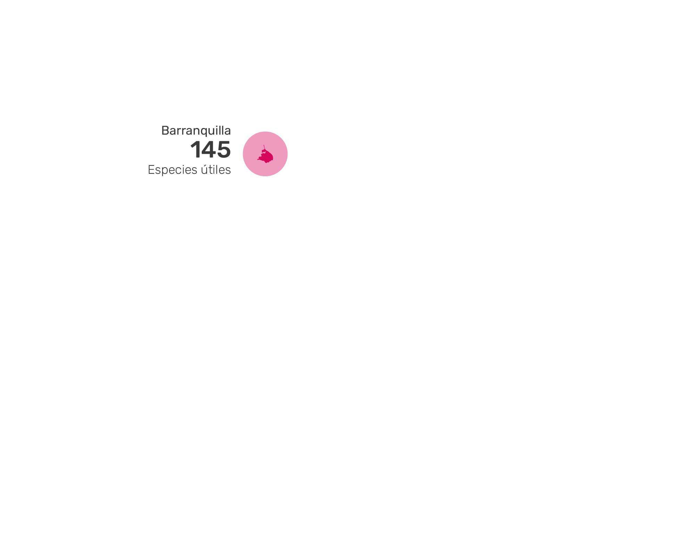
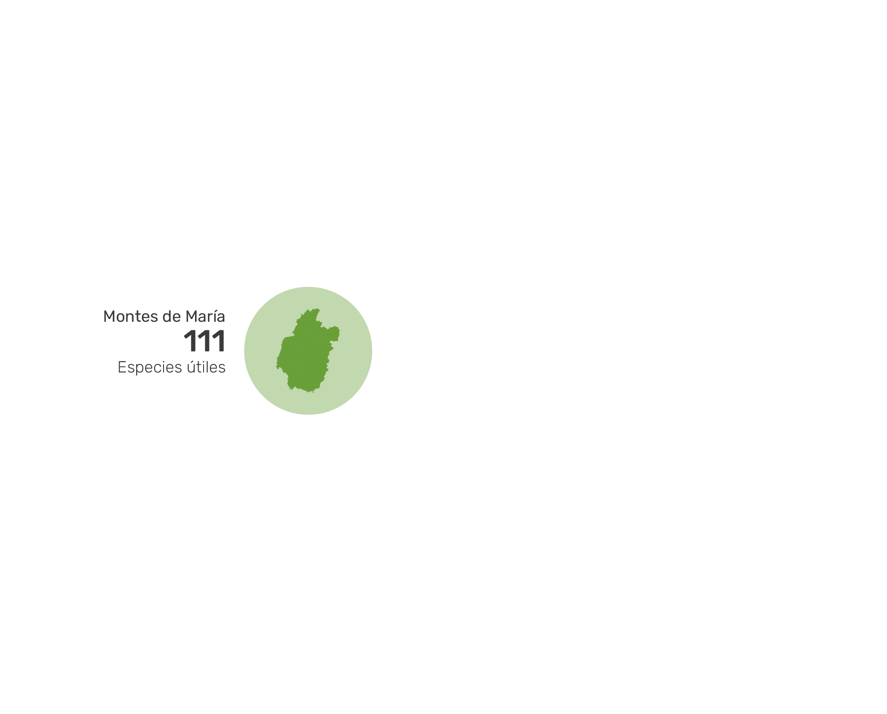
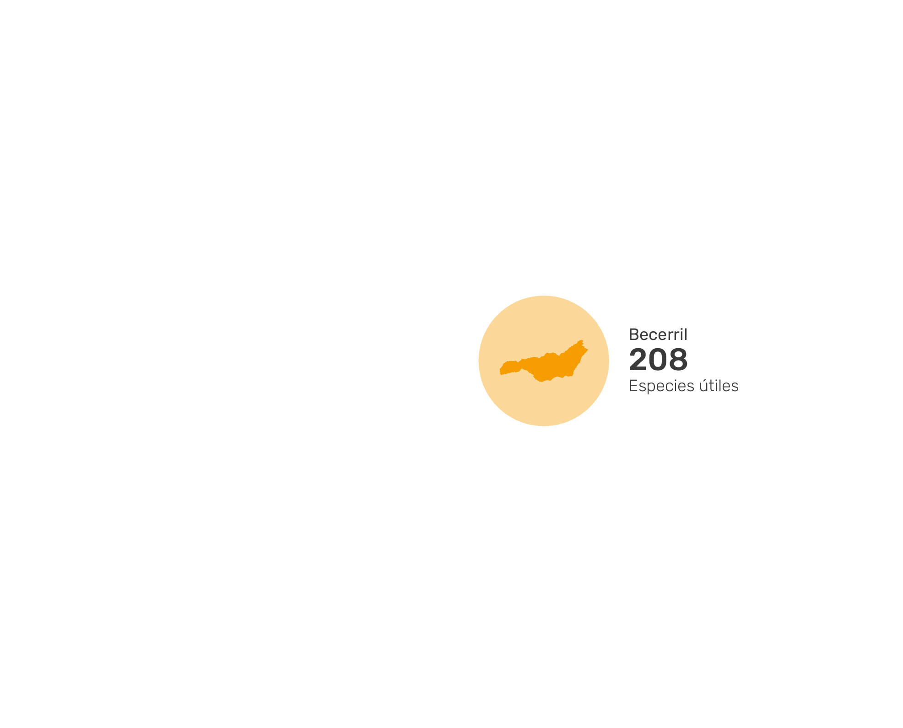

Número de especies útiles identificadas en Barranquilla, Montes de María y Becerril
Barranquilla
Montes de María
Becerril

  
Especies priorizadas por su potencial de aprovechamiento
Montes de María
Barranquilla
Becerril